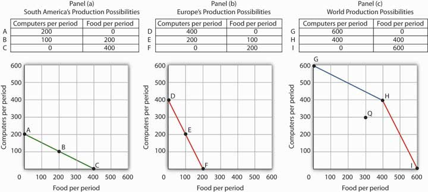
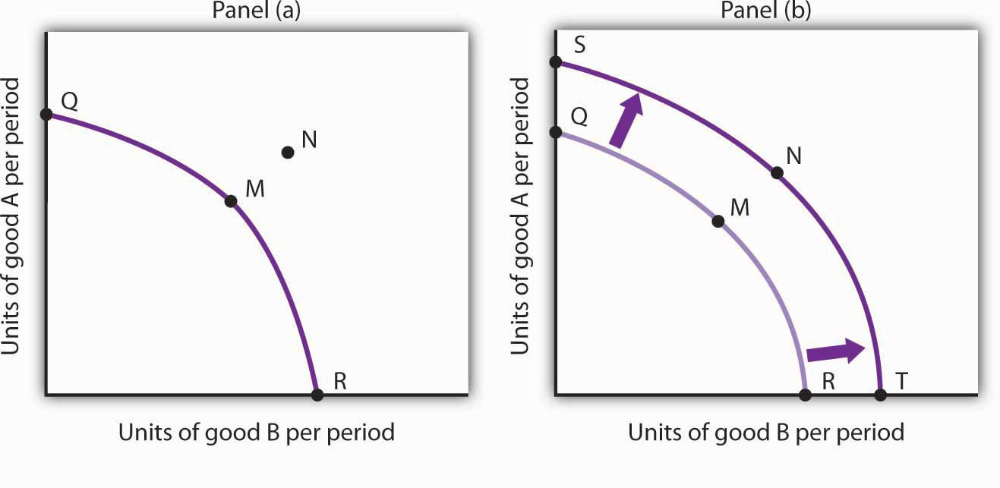
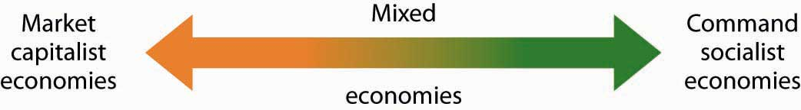
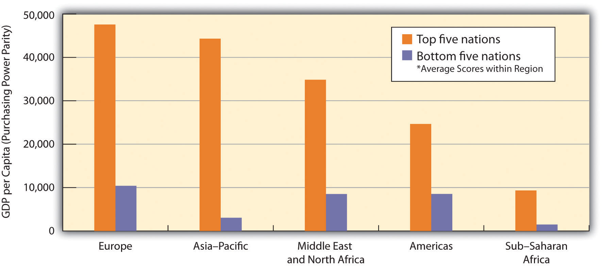

In the wake of the terrorist attacks on the United States on September 11, 2001, American taxpayers continue to give up a great deal of money, and airline passengers continue to give much of their time—and a great deal of their privacy—in an effort to ensure that other terrorists will not turn their flights into tragedies.
The U.S. effort is run by the Transportation Security Administration (TSA), a federal agency created in response to the 2001 attacks. TSA requirements became a bit more onerous after Richard Reid, an Englishman and member of al-Qaeda, tried in December of that same year to blow up an American Airlines flight with a bomb he had concealed in his shoe. Reid was unsuccessful, but passengers must now remove their shoes so TSA agents can check them for bombs.
TSA restrictions became dramatically more stringent after Umar Farouk Abdulmutallab, a jihadist from Nigeria, tried—again without success—to blow up a plane flying from Amsterdam to Detroit on Christmas Day, 2009, using a bomb concealed in his underwear. The subsequent tightening of TSA regulations, and the introduction of body-scan machines and “patdown inspections,” were quick to follow. Each new procedure took additional money and time and further reduced passenger privacy. It was a production choice that has created many irate passengers but has also been successful, to date, in preventing subsequent terrorist attacks.
While the TSA procedures represent an unusual production choice, it is still a production choice—one that is being made all over the world as countries grapple with the danger of terrorist attacks. In this chapter we introduce our first model, the production possibilities modelShows the goods and services that an economy is capable of producing—its opportunities—given the factors of production and the technology it has available., to examine the nature of choices to produce more of some goods and less of others. As its name suggests, the production possibilities model shows the goods and services that an economy is capable of producing—its possibilities—given the factors of production and the technology it has available. The model specifies what it means to use resources fully and efficiently and suggests some important implications for international trade. We can also use the model to illustrate economic growth, a process that expands the set of production possibilities available to an economy.
We then turn to an examination of the type of economic system in which choices are made. An economic systemThe set of rules that define how an economy’s resources are to be owned and how decisions about their use are to be made. is the set of rules that define how an economy’s resources are to be owned and how decisions about their use are to be made. We will see that economic systems differ—primarily in the degree of government involvement—in terms of how they answer the fundamental economic questions. Many of the world’s economic systems, including the systems that prevail in North America, Europe, much of Asia, and parts of Central and South America, rely on individuals operating in a market economy to make those choices. Other economic systems rely principally on government to make these choices. Different economic systems result in different choices and thus different outcomes; that market economies generally outperform the others when it comes to providing more of the things that people want helps to explain the dramatic shift from government-dominated toward market-dominated economic systems that occurred throughout the world in the last two decades of the 20th century. The chapter concludes with an examination of the role of government in an economy that relies chiefly on markets to allocate goods and services.
Choices concerning what goods and services to produce are choices about an economy’s use of its factors of productionThe resources available to the economy for the production of goods and services., the resources available to it for the production of goods and services. The value, or satisfaction, that people derive from the goods and services they consume and the activities they pursue is called utilityThe value, or satisfaction, that people derive from the goods and services they consume and the activities they pursue.. Ultimately, then, an economy’s factors of production create utility; they serve the interests of people.
The factors of production in an economy are its labor, capital, and natural resources. LaborThe human effort that can be applied to the production of goods and services. is the human effort that can be applied to the production of goods and services. People who are employed—or are available to be—are considered part of the labor available to the economy. CapitalA factor of production that has been produced for use in the production of other goods and services. is a factor of production that has been produced for use in the production of other goods and services. Office buildings, machinery, and tools are examples of capital. Natural resourcesThe resources of nature that can be used for the production of goods and services. are the resources of nature that can be used for the production of goods and services.
In the next three sections, we will take a closer look at the factors of production we use to produce the goods and services we consume. The three basic building blocks of labor, capital, and natural resources may be used in different ways to produce different goods and services, but they still lie at the core of production. We will then look at the roles played by technology and entrepreneurs in putting these factors of production to work. As economists began to grapple with the problems of scarcity, choice, and opportunity cost more than two centuries ago, they focused on these concepts, just as they are likely to do two centuries hence.
Labor is the human effort that can be applied to production. People who work to repair tires, pilot airplanes, teach children, or enforce laws are all part of the economy’s labor. People who would like to work but have not found employment—who are unemployed—are also considered part of the labor available to the economy.
In some contexts, it is useful to distinguish two forms of labor. The first is the human equivalent of a natural resource. It is the natural ability an untrained, uneducated person brings to a particular production process. But most workers bring far more. Skills a worker has as a result of education, training, or experience that can be used in production are called human capitalThe skills a worker has as a result of education, training, or experience that can be used in production.. Students are acquiring human capital. Workers who are gaining skills through experience or through training are acquiring human capital.
The amount of labor available to an economy can be increased in two ways. One is to increase the total quantity of labor, either by increasing the number of people available to work or by increasing the average number of hours of work per time period. The other is to increase the amount of human capital possessed by workers.
Long ago, when the first human beings walked the earth, they produced food by picking leaves or fruit off a plant or by catching an animal and eating it. We know that very early on, however, they began shaping stones into tools, apparently for use in butchering animals. Those tools were the first capital because they were produced for use in producing other goods—food and clothing.
Modern versions of the first stone tools include saws, meat cleavers, hooks, and grinders; all are used in butchering animals. Tools such as hammers, screwdrivers, and wrenches are also capital. Transportation equipment, such as cars and trucks, is capital. Facilities such as roads, bridges, ports, and airports are capital. Buildings, too, are capital; they help us to produce goods and services.
Capital does not consist solely of physical objects. The score for a new symphony is capital because it will be used to produce concerts. Computer software used by business firms or government agencies to produce goods and services is capital. Capital may thus include physical goods and intellectual discoveries. Any resource is capital if it satisfies two criteria:
One thing that is not considered capital is money. A firm cannot use money directly to produce other goods, so money does not satisfy the second criterion for capital. Firms can, however, use money to acquire capital. Money is a form of financial capital. Financial capitalIncludes money and other “paper” assets (such as stocks and bonds) that represent claims on future payments. includes money and other “paper” assets (such as stocks and bonds) that represent claims on future payments. These financial assets are not capital, but they can be used directly or indirectly to purchase factors of production or goods and services.
There are two essential characteristics of natural resources. The first is that they are found in nature—that no human effort has been used to make or alter them. The second is that they can be used for the production of goods and services. That requires knowledge; we must know how to use the things we find in nature before they become resources.
Consider oil. Oil in the ground is a natural resource because it is found (not manufactured) and can be used to produce goods and services. However, 250 years ago oil was a nuisance, not a natural resource. Pennsylvania farmers in the eighteenth century who found oil oozing up through their soil were dismayed, not delighted. No one knew what could be done with the oil. It was not until the mid-nineteenth century that a method was found for refining oil into kerosene that could be used to generate energy, transforming oil into a natural resource. Oil is now used to make all sorts of things, including clothing, drugs, gasoline, and plastic. It became a natural resource because people discovered and implemented a way to use it.
Defining something as a natural resource only if it can be used to produce goods and services does not mean that a tree has value only for its wood or that a mountain has value only for its minerals. If people gain utility from the existence of a beautiful wilderness area, then that wilderness provides a service. The wilderness is thus a natural resource.
The natural resources available to us can be expanded in three ways. One is the discovery of new natural resources, such as the discovery of a deposit of ore containing titanium. The second is the discovery of new uses for resources, as happened when new techniques allowed oil to be put to productive use or sand to be used in manufacturing computer chips. The third is the discovery of new ways to extract natural resources in order to use them. New methods of discovering and mapping oil deposits have increased the world’s supply of this important natural resource.
Goods and services are produced using the factors of production available to the economy. Two things play a crucial role in putting these factors of production to work. The first is technologyThe knowledge that can be applied to the production of goods and services., the knowledge that can be applied to the production of goods and services. The second is an individual who plays a key role in a market economy: the entrepreneur. An entrepreneurA person who, operating within the context of a market economy, seeks to earn profits by finding new ways to organize factors of production. is a person who, operating within the context of a market economy, seeks to earn profits by finding new ways to organize factors of production. In non-market economies the role of the entrepreneur is played by bureaucrats and other decision makers who respond to incentives other than profit to guide their choices about resource allocation decisions.
The interplay of entrepreneurs and technology affects all our lives. Entrepreneurs put new technologies to work every day, changing the way factors of production are used. Farmers and factory workers, engineers and electricians, technicians and teachers all work differently than they did just a few years ago, using new technologies introduced by entrepreneurs. The music you enjoy, the books you read, the athletic equipment with which you play are produced differently than they were five years ago. The book you are reading was written and manufactured using technologies that did not exist ten years ago. We can dispute whether all the changes have made our lives better. What we cannot dispute is that they have made our lives different.
Explain whether each of the following is labor, capital, or a natural resource.
Technology can seem an abstract force in the economy—important, but invisible.
It is not invisible to the 130 people who work on a Shell Oil Company oil rig called Mars, located in the deep waters of the Gulf of Mexico, about 160 miles southwest of Pensacola, Florida. The name Mars reflects its otherworld appearance—it extends 300 feet above the water’s surface and has steel tendons that reach 3,000 feet down to extract the Gulf’s oil deposits. This facility would not exist if it were not for the development of better oil discovery methods that include three-dimensional seismic mapping techniques, satellites that locate oil from space, and drills that can make turns as drilling foremen steer them by monitoring them on computer screens from the comfort of Mars. “We don’t hit as many dry holes,” commented Shell manager Miles Barrett. As a result of these new technologies, over the past two decades, the cost of discovering a barrel of oil dropped from $20 to under $5. And the technologies continue to improve. Three-dimensional surveys are being replaced with four-dimensional ones that allow geologists to see how the oil fields change over time.
The Mars project was destroyed by Hurricane Katrina in 2005. Royal Dutch Shell completed repairs in 2006, at a cost of $200 million. But the facility is again pumping 130,000 barrels of oil per day and 150 million cubic feet of natural gas, the energy equivalent of an additional 26,000 barrels of oil. Shell announced a new Mars-like project, Mars B Olympus, in 2010. The second Mars hub will be located 100 miles south of New Orleans and is expected to begin production in 2015.
Technology is doing more than helping energy companies track oil deposits. It is changing the way soft drinks and other grocery items are delivered to retail stores. For example, when a PepsiCo delivery driver arrives at a 7-Eleven, the driver keys into a handheld computer the store’s inventory of soft drinks, chips, and other PepsiCo products. The information is transmitted to a main computer at the warehouse that begins processing the next order for that store. The result is that the driver can visit more stores in a day and PepsiCo can cover a given territory with fewer drivers and trucks.
New technology is even helping to produce more milk from cows. Ed Larsen, who owns a 1,200-cow dairy farm in Wisconsin, never gets up before dawn to milk the cows, the way he did as a boy. Rather, the cows are hooked up to electronic milkers. Computers measure each cow’s output, and cows producing little milk are sent to a “hospital wing” for treatment. With the help of such technology, as well as better feed, today’s dairy cows produce 50% more milk than did cows roughly 20 years ago. Even though the number of dairy cows in the United States in the last 20 years has fallen 17%, milk output has increased 25%.
Who benefits from technological progress? Consumers gain from lower prices and better service. Workers gain: Their greater ability to produce goods and services translates into higher wages. And firms gain: Lower production costs mean higher profits. Of course, some people lose as technology advances. Some jobs are eliminated, and some firms find their services are no longer needed. One can argue about whether particular technological changes have improved our lives, but they have clearly made—and will continue to make—them far different.
Sources: David Ballingrud, “Drilling in the Gulf: Life on Mars,” St. Petersburg Times (Florida), August 5, 2001, p. 1A; Barbara Hagenbaugh, “Dairy Farms Evolve to Survive,” USA Today, August 7, 2003, p. 1B; Del Jones and Barbara Hansen, “Special Report: A Who’s Who of Productivity,” USA Today, August 30, 2001, p. 1B; Christopher Helman, Shell Shocked, Forbes Online, July 27, 2006; “Shell Plans Second Deep Water Production Hub,” September 9, 2010 at http://www.shell.us/home/content/usa/aboutshell/media_center/news_and_press_releases/2010/09292010_mars.html.
An economy’s factors of production are scarce; they cannot produce an unlimited quantity of goods and services. A production possibilities curveA graphical representation of the alternative combinations of goods and services an economy can produce. is a graphical representation of the alternative combinations of goods and services an economy can produce. It illustrates the production possibilities model. In drawing the production possibilities curve, we shall assume that the economy can produce only two goods and that the quantities of factors of production and the technology available to the economy are fixed.
To construct a production possibilities curve, we will begin with the case of a hypothetical firm, Alpine Sports, Inc., a specialized sports equipment manufacturer. Christie Ryder began the business 15 years ago with a single ski production facility near Killington ski resort in central Vermont. Ski sales grew, and she also saw demand for snowboards rising—particularly after snowboard competition events were included in the 2002 Winter Olympics in Salt Lake City. She added a second plant in a nearby town. The second plant, while smaller than the first, was designed to produce snowboards as well as skis. She also modified the first plant so that it could produce both snowboards and skis. Two years later she added a third plant in another town. While even smaller than the second plant, the third was primarily designed for snowboard production but could also produce skis.
We can think of each of Ms. Ryder’s three plants as a miniature economy and analyze them using the production possibilities model. We assume that the factors of production and technology available to each of the plants operated by Alpine Sports are unchanged.
Suppose the first plant, Plant 1, can produce 200 pairs of skis per month when it produces only skis. When devoted solely to snowboards, it produces 100 snowboards per month. It can produce skis and snowboards simultaneously as well.
The table in Figure 2.1 "A Production Possibilities Curve" gives three combinations of skis and snowboards that Plant 1 can produce each month. Combination A involves devoting the plant entirely to ski production; combination C means shifting all of the plant’s resources to snowboard production; combination B involves the production of both goods. These values are plotted in a production possibilities curve for Plant 1. The curve is a downward-sloping straight line, indicating we have assumed that there is a linear, negative relationship between the production of the two goods.
Neither skis nor snowboards is an independent or a dependent variable in the production possibilities model; we can assign either one to the vertical or to the horizontal axis. Here, we have placed the number of pairs of skis produced per month on the vertical axis and the number of snowboards produced per month on the horizontal axis.
The negative slope of the production possibilities curve reflects the scarcity of the plant’s capital and labor. Producing more snowboards requires shifting resources out of ski production and thus producing fewer skis. Producing more skis requires shifting resources out of snowboard production and thus producing fewer snowboards.
The slope of Plant 1’s production possibilities curve measures the rate at which Alpine Sports must give up ski production to produce additional snowboards. Because the production possibilities curve for Plant 1 is linear, we can compute the slope between any two points on the curve and get the same result. Between points A and B, for example, the slope equals −2 pairs of skis/snowboard (equals −100 pairs of skis/50 snowboards). (Many students are helped when told to read this result as “−2 pairs of skis per snowboard.”) We get the same value between points B and C, and between points A and C.
Figure 2.1 A Production Possibilities Curve

The table shows the combinations of pairs of skis and snowboards that Plant 1 is capable of producing each month. These are also illustrated with a production possibilities curve. Notice that this curve is linear.
To see this relationship more clearly, examine Figure 2.2 "The Slope of a Production Possibilities Curve". Suppose Plant 1 is producing 100 pairs of skis and 50 snowboards per month at point B. Now consider what would happen if Ms. Ryder decided to produce 1 more snowboard per month. The segment of the curve around point B is magnified in Figure 2.2 "The Slope of a Production Possibilities Curve". The slope between points B and B′ is −2 pairs of skis/snowboard. Producing 1 additional snowboard at point B′ requires giving up 2 pairs of skis. We can think of this as the opportunity cost of producing an additional snowboard at Plant 1. This opportunity cost equals the absolute value of the slope of the production possibilities curve.
Figure 2.2 The Slope of a Production Possibilities Curve

The slope of the linear production possibilities curve in Figure 2.1 "A Production Possibilities Curve" is constant; it is −2 pairs of skis/snowboard. In the section of the curve shown here, the slope can be calculated between points B and B′. Expanding snowboard production to 51 snowboards per month from 50 snowboards per month requires a reduction in ski production to 98 pairs of skis per month from 100 pairs. The slope equals −2 pairs of skis/snowboard (that is, it must give up two pairs of skis to free up the resources necessary to produce one additional snowboard). To shift from B′ to B″, Alpine Sports must give up two more pairs of skis per snowboard. The absolute value of the slope of a production possibilities curve measures the opportunity cost of an additional unit of the good on the horizontal axis measured in terms of the quantity of the good on the vertical axis that must be forgone.
The absolute value of the slope of any production possibilities curve equals the opportunity cost of an additional unit of the good on the horizontal axis. It is the amount of the good on the vertical axis that must be given up in order to free up the resources required to produce one more unit of the good on the horizontal axis. We will make use of this important fact as we continue our investigation of the production possibilities curve.
Figure 2.3 "Production Possibilities at Three Plants" shows production possibilities curves for each of the firm’s three plants. Each of the plants, if devoted entirely to snowboards, could produce 100 snowboards. Plants 2 and 3, if devoted exclusively to ski production, can produce 100 and 50 pairs of skis per month, respectively. The exhibit gives the slopes of the production possibilities curves for each plant. The opportunity cost of an additional snowboard at each plant equals the absolute values of these slopes (that is, the number of pairs of skis that must be given up per snowboard).
Figure 2.3 Production Possibilities at Three Plants

The slopes of the production possibilities curves for each plant differ. The steeper the curve, the greater the opportunity cost of an additional snowboard. Here, the opportunity cost is lowest at Plant 3 and greatest at Plant 1.
The exhibit gives the slopes of the production possibilities curves for each of the firm’s three plants. The opportunity cost of an additional snowboard at each plant equals the absolute values of these slopes. More generally, the absolute value of the slope of any production possibilities curve at any point gives the opportunity cost of an additional unit of the good on the horizontal axis, measured in terms of the number of units of the good on the vertical axis that must be forgone.
The greater the absolute value of the slope of the production possibilities curve, the greater the opportunity cost will be. The plant for which the opportunity cost of an additional snowboard is greatest is the plant with the steepest production possibilities curve; the plant for which the opportunity cost is lowest is the plant with the flattest production possibilities curve. The plant with the lowest opportunity cost of producing snowboards is Plant 3; its slope of −0.5 means that Ms. Ryder’s firm must give up half a pair of skis in that plant to produce an additional snowboard. In Plant 2, she must give up one pair of skis to gain one more snowboard. We have already seen that an additional snowboard requires giving up two pairs of skis in Plant 1.
To construct a combined production possibilities curve for all three plants, we can begin by asking how many pairs of skis Alpine Sports could produce if it were producing only skis. To find this quantity, we add up the values at the vertical intercepts of each of the production possibilities curves in Figure 2.3 "Production Possibilities at Three Plants". These intercepts tell us the maximum number of pairs of skis each plant can produce. Plant 1 can produce 200 pairs of skis per month, Plant 2 can produce 100 pairs of skis at per month, and Plant 3 can produce 50 pairs. Alpine Sports can thus produce 350 pairs of skis per month if it devotes its resources exclusively to ski production. In that case, it produces no snowboards.
Now suppose the firm decides to produce 100 snowboards. That will require shifting one of its plants out of ski production. Which one will it choose to shift? The sensible thing for it to do is to choose the plant in which snowboards have the lowest opportunity cost—Plant 3. It has an advantage not because it can produce more snowboards than the other plants (all the plants in this example are capable of producing up to 100 snowboards per month) but because it is the least productive plant for making skis. Producing a snowboard in Plant 3 requires giving up just half a pair of skis.
Economists say that an economy has a comparative advantageIn producing a good or service, the situation that occurs if the opportunity cost of producing that good or service is lower for that economy than for any other. in producing a good or service if the opportunity cost of producing that good or service is lower for that economy than for any other. Plant 3 has a comparative advantage in snowboard production because it is the plant for which the opportunity cost of additional snowboards is lowest. To put this in terms of the production possibilities curve, Plant 3 has a comparative advantage in snowboard production (the good on the horizontal axis) because its production possibilities curve is the flattest of the three curves.
Figure 2.4 The Combined Production Possibilities Curve for Alpine Sports

The curve shown combines the production possibilities curves for each plant. At point A, Alpine Sports produces 350 pairs of skis per month and no snowboards. If the firm wishes to increase snowboard production, it will first use Plant 3, which has a comparative advantage in snowboards.
Plant 3’s comparative advantage in snowboard production makes a crucial point about the nature of comparative advantage. It need not imply that a particular plant is especially good at an activity. In our example, all three plants are equally good at snowboard production. Plant 3, though, is the least efficient of the three in ski production. Alpine thus gives up fewer skis when it produces snowboards in Plant 3. Comparative advantage thus can stem from a lack of efficiency in the production of an alternative good rather than a special proficiency in the production of the first good.
The combined production possibilities curve for the firm’s three plants is shown in Figure 2.4 "The Combined Production Possibilities Curve for Alpine Sports". We begin at point A, with all three plants producing only skis. Production totals 350 pairs of skis per month and zero snowboards. If the firm were to produce 100 snowboards at Plant 3, ski production would fall by 50 pairs per month (recall that the opportunity cost per snowboard at Plant 3 is half a pair of skis). That would bring ski production to 300 pairs, at point B. If Alpine Sports were to produce still more snowboards in a single month, it would shift production to Plant 2, the facility with the next-lowest opportunity cost. Producing 100 snowboards at Plant 2 would leave Alpine Sports producing 200 snowboards and 200 pairs of skis per month, at point C. If the firm were to switch entirely to snowboard production, Plant 1 would be the last to switch because the cost of each snowboard there is 2 pairs of skis. With all three plants producing only snowboards, the firm is at point D on the combined production possibilities curve, producing 300 snowboards per month and no skis.
Notice that this production possibilities curve, which is made up of linear segments from each assembly plant, has a bowed-out shape; the absolute value of its slope increases as Alpine Sports produces more and more snowboards. This is a result of transferring resources from the production of one good to another according to comparative advantage. We shall examine the significance of the bowed-out shape of the curve in the next section.
We see in Figure 2.4 "The Combined Production Possibilities Curve for Alpine Sports" that, beginning at point A and producing only skis, Alpine Sports experiences higher and higher opportunity costs as it produces more snowboards. The fact that the opportunity cost of additional snowboards increases as the firm produces more of them is a reflection of an important economic law. The law of increasing opportunity costAs an economy moves along its production possibilities curve in the direction of producing more of a particular good, the opportunity cost of additional units of that good will increase. holds that as an economy moves along its production possibilities curve in the direction of producing more of a particular good, the opportunity cost of additional units of that good will increase.
We have seen the law of increasing opportunity cost at work traveling from point A toward point D on the production possibilities curve in Figure 2.4 "The Combined Production Possibilities Curve for Alpine Sports". The opportunity cost of each of the first 100 snowboards equals half a pair of skis; each of the next 100 snowboards has an opportunity cost of 1 pair of skis, and each of the last 100 snowboards has an opportunity cost of 2 pairs of skis. The law also applies as the firm shifts from snowboards to skis. Suppose it begins at point D, producing 300 snowboards per month and no skis. It can shift to ski production at a relatively low cost at first. The opportunity cost of the first 200 pairs of skis is just 100 snowboards at Plant 1, a movement from point D to point C, or 0.5 snowboards per pair of skis. We would say that Plant 1 has a comparative advantage in ski production. The next 100 pairs of skis would be produced at Plant 2, where snowboard production would fall by 100 snowboards per month. The opportunity cost of skis at Plant 2 is 1 snowboard per pair of skis. Plant 3 would be the last plant converted to ski production. There, 50 pairs of skis could be produced per month at a cost of 100 snowboards, or an opportunity cost of 2 snowboards per pair of skis.
The bowed-out shape of the production possibilities curve illustrates the law of increasing opportunity cost. Its downwards slope reflects scarcity.
Figure 2.5 "Production Possibilities for the Economy" illustrates a much smoother production possibilities curve. This production possibilities curve in Panel (a) includes 10 linear segments and is almost a smooth curve. As we include more and more production units, the curve will become smoother and smoother. In an actual economy, with a tremendous number of firms and workers, it is easy to see that the production possibilities curve will be smooth. We will generally draw production possibilities curves for the economy as smooth, bowed-out curves, like the one in Panel (b). This production possibilities curve shows an economy that produces only skis and snowboards. Notice the curve still has a bowed-out shape; it still has a negative slope. Notice also that this curve has no numbers. Economists often use models such as the production possibilities model with graphs that show the general shapes of curves but that do not include specific numbers.
Figure 2.5 Production Possibilities for the Economy

As we combine the production possibilities curves for more and more units, the curve becomes smoother. It retains its negative slope and bowed-out shape. In Panel (a) we have a combined production possibilities curve for Alpine Sports, assuming that it now has 10 plants producing skis and snowboards. Even though each of the plants has a linear curve, combining them according to comparative advantage, as we did with 3 plants in Figure 2.4 "The Combined Production Possibilities Curve for Alpine Sports", produces what appears to be a smooth, nonlinear curve, even though it is made up of linear segments. In drawing production possibilities curves for the economy, we shall generally assume they are smooth and “bowed out,” as in Panel (b). This curve depicts an entire economy that produces only skis and snowboards.
We can use the production possibilities model to examine choices in the production of goods and services. In applying the model, we assume that the economy can produce two goods, and we assume that technology and the factors of production available to the economy remain unchanged. In this section, we shall assume that the economy operates on its production possibilities curve so that an increase in the production of one good in the model implies a reduction in the production of the other.
We shall consider two goods and services: national defense and security and a category we shall call “all other goods and services.” This second category includes the entire range of goods and services the economy can produce, aside from national defense and security. Clearly, the transfer of resources to the effort to enhance national security reduces the quantity of other goods and services that can be produced. In the wake of the 9/11 attacks in 2001, nations throughout the world increased their spending for national security. This spending took a variety of forms. One, of course, was increased defense spending. Local and state governments also increased spending in an effort to prevent terrorist attacks. Airports around the world hired additional agents to inspect luggage and passengers.
The increase in resources devoted to security meant fewer “other goods and services” could be produced. In terms of the production possibilities curve in Figure 2.6 "Spending More for Security", the choice to produce more security and less of other goods and services means a movement from A to B. Of course, an economy cannot really produce security; it can only attempt to provide it. The attempt to provide it requires resources; it is in that sense that we shall speak of the economy as “producing” security.
Figure 2.6 Spending More for Security

Here, an economy that can produce two categories of goods, security and “all other goods and services,” begins at point A on its production possibilities curve. The economy produces SA units of security and OA units of all other goods and services per period. A movement from A to B requires shifting resources out of the production of all other goods and services and into spending on security. The increase in spending on security, to SA units of security per period, has an opportunity cost of reduced production of all other goods and services. Production of all other goods and services falls by OA - OB units per period.
At point A, the economy was producing SA units of security on the vertical axis—defense services and various forms of police protection—and OA units of other goods and services on the horizontal axis. The decision to devote more resources to security and less to other goods and services represents the choice we discussed in the chapter introduction. In this case we have categories of goods rather than specific goods. Thus, the economy chose to increase spending on security in the effort to defeat terrorism. Since we have assumed that the economy has a fixed quantity of available resources, the increased use of resources for security and national defense necessarily reduces the number of resources available for the production of other goods and services.
The law of increasing opportunity cost tells us that, as the economy moves along the production possibilities curve in the direction of more of one good, its opportunity cost will increase. We may conclude that, as the economy moved along this curve in the direction of greater production of security, the opportunity cost of the additional security began to increase. That is because the resources transferred from the production of other goods and services to the production of security had a greater and greater comparative advantage in producing things other than security.
The production possibilities model does not tell us where on the curve a particular economy will operate. Instead, it lays out the possibilities facing the economy. Many countries, for example, chose to move along their respective production possibilities curves to produce more security and national defense and less of all other goods in the wake of 9/11. We will see in the chapter on demand and supply how choices about what to produce are made in the marketplace.
An economy that is operating inside its production possibilities curve could, by moving onto it, produce more of all the goods and services that people value, such as food, housing, education, medical care, and music. Increasing the availability of these goods would improve the standard of living. Economists conclude that it is better to be on the production possibilities curve than inside it.
Two things could leave an economy operating at a point inside its production possibilities curve. First, the economy might fail to use fully the resources available to it. Second, it might not allocate resources on the basis of comparative advantage. In either case, production within the production possibilities curve implies the economy could improve its performance.
Suppose an economy fails to put all its factors of production to work. Some workers are without jobs, some buildings are without occupants, some fields are without crops. Because an economy’s production possibilities curve assumes the full use of the factors of production available to it, the failure to use some factors results in a level of production that lies inside the production possibilities curve.
If all the factors of production that are available for use under current market conditions are being utilized, the economy has achieved full employmentSituation in which all the factors of production that are available for use under current market conditions are being utilized.. An economy cannot operate on its production possibilities curve unless it has full employment.
Figure 2.7 Idle Factors and Production

The production possibilities curve shown suggests an economy that can produce two goods, food and clothing. As a result of a failure to achieve full employment, the economy operates at a point such as B, producing FB units of food and CB units of clothing per period. Putting its factors of production to work allows a move to the production possibilities curve, to a point such as A. The production of both goods rises.
Figure 2.7 "Idle Factors and Production" shows an economy that can produce food and clothing. If it chooses to produce at point A, for example, it can produce FA units of food and CA units of clothing. Now suppose that a large fraction of the economy’s workers lose their jobs, so the economy no longer makes full use of one factor of production: labor. In this example, production moves to point B, where the economy produces less food (FB) and less clothing (CB) than at point A. We often think of the loss of jobs in terms of the workers; they have lost a chance to work and to earn income. But the production possibilities model points to another loss: goods and services the economy could have produced that are not being produced.
Now suppose Alpine Sports is fully employing its factors of production. Could it still operate inside its production possibilities curve? Could an economy that is using all its factors of production still produce less than it could? The answer is “Yes,” and the key lies in comparative advantage. An economy achieves a point on its production possibilities curve only if it allocates its factors of production on the basis of comparative advantage. If it fails to do that, it will operate inside the curve.
Suppose that, as before, Alpine Sports has been producing only skis. With all three of its plants producing skis, it can produce 350 pairs of skis per month (and no snowboards). The firm then starts producing snowboards. This time, however, imagine that Alpine Sports switches plants from skis to snowboards in numerical order: Plant 1 first, Plant 2 second, and then Plant 3. Figure 2.8 "Efficient Versus Inefficient Production" illustrates the result. Instead of the bowed-out production possibilities curve ABCD, we get a bowed-in curve, AB′C′D. Suppose that Alpine Sports is producing 100 snowboards and 150 pairs of skis at point B′. Had the firm based its production choices on comparative advantage, it would have switched Plant 3 to snowboards and then Plant 2, so it could have operated at a point such as C. It would be producing more snowboards and more pairs of skis—and using the same quantities of factors of production it was using at B′. Had the firm based its production choices on comparative advantage, it would have switched Plant 3 to snowboards and then Plant 2, so it would have operated at point C. It would be producing more snowboards and more pairs of skis—and using the same quantities of factors of production it was using at B′. When an economy is operating on its production possibilities curve, we say that it is engaging in efficient productionWhen an economy is operating on its production possibilities curve.. If it is using the same quantities of factors of production but is operating inside its production possibilities curve, it is engaging in inefficient productionSituation in which the economy is using the same quantities of factors of production but is operating inside its production possibilities curve.. Inefficient production implies that the economy could be producing more goods without using any additional labor, capital, or natural resources.
Figure 2.8 Efficient Versus Inefficient Production

When factors of production are allocated on a basis other than comparative advantage, the result is inefficient production. Suppose Alpine Sports operates the three plants we examined in Figure 2.3 "Production Possibilities at Three Plants". Suppose further that all three plants are devoted exclusively to ski production; the firm operates at A. Now suppose that, to increase snowboard production, it transfers plants in numerical order: Plant 1 first, then Plant 2, and finally Plant 3. The result is the bowed-in curve AB′C′D. Production on the production possibilities curve ABCD requires that factors of production be transferred according to comparative advantage.
Points on the production possibilities curve thus satisfy two conditions: the economy is making full use of its factors of production, and it is making efficient use of its factors of production. If there are idle or inefficiently allocated factors of production, the economy will operate inside the production possibilities curve. Thus, the production possibilities curve not only shows what can be produced; it provides insight into how goods and services should be produced. It suggests that to obtain efficiency in production, factors of production should be allocated on the basis of comparative advantage. Further, the economy must make full use of its factors of production if it is to produce the goods and services it is capable of producing.
The production possibilities model suggests that specialization will occur. SpecializationSituation in which an economy is producing the goods and services in which it has a comparative advantage. implies that an economy is producing the goods and services in which it has a comparative advantage. If Alpine Sports selects point C in Figure 2.8 "Efficient Versus Inefficient Production", for example, it will assign Plant 1 exclusively to ski production and Plants 2 and 3 exclusively to snowboard production.
Such specialization is typical in an economic system. Workers, for example, specialize in particular fields in which they have a comparative advantage. People work and use the income they earn to buy—perhaps import—goods and services from people who have a comparative advantage in doing other things. The result is a far greater quantity of goods and services than would be available without this specialization.
Think about what life would be like without specialization. Imagine that you are suddenly completely cut off from the rest of the economy. You must produce everything you consume; you obtain nothing from anyone else. Would you be able to consume what you consume now? Clearly not. It is hard to imagine that most of us could even survive in such a setting. The gains we achieve through specialization are enormous.
Nations specialize as well. Much of the land in the United States has a comparative advantage in agricultural production and is devoted to that activity. Hong Kong, with its huge population and tiny endowment of land, allocates virtually none of its land to agricultural use; that option would be too costly. Its land is devoted largely to nonagricultural use.
Suppose a manufacturing firm is equipped to produce radios or calculators. It has two plants, Plant R and Plant S, at which it can produce these goods. Given the labor and the capital available at both plants, it can produce the combinations of the two goods at the two plants shown.
| Output per day, Plant R | ||
|---|---|---|
| Combination | Calculators | Radios |
| A | 100 | 0 |
| B | 50 | 25 |
| C | 0 | 50 |
| Output per day, Plant S | ||
|---|---|---|
| Combination | Calculators | Radios |
| D | 50 | 0 |
| E | 25 | 50 |
| F | 0 | 100 |
Put calculators on the vertical axis and radios on the horizontal axis. Draw the production possibilities curve for Plant R. On a separate graph, draw the production possibilities curve for Plant S. Which plant has a comparative advantage in calculators? In radios? Now draw the combined curves for the two plants. Suppose the firm decides to produce 100 radios. Where will it produce them? How many calculators will it be able to produce? Where will it produce the calculators?
The U.S. economy looked very healthy in the beginning of 1929. It had enjoyed seven years of dramatic growth and unprecedented prosperity. Its resources were fully employed; it was operating quite close to its production possibilities curve.
In the summer of 1929, however, things started going wrong. Production and employment fell. They continued to fall for several years. By 1933, more than 25% of the nation’s workers had lost their jobs. Production had plummeted by almost 30%. The economy had moved well within its production possibilities curve.
Output began to grow after 1933, but the economy continued to have vast numbers of idle workers, idle factories, and idle farms. These resources were not put back to work fully until 1942, after the U.S. entry into World War II demanded mobilization of the economy’s factors of production.
Between 1929 and 1942, the economy produced 25% fewer goods and services than it would have if its resources had been fully employed. That was a loss, measured in today’s dollars, of well over $3 trillion. In material terms, the forgone output represented a greater cost than the United States would ultimately spend in World War II. The Great Depression was a costly experience indeed.
The production possibilities curves for the two plants are shown, along with the combined curve for both plants. Plant R has a comparative advantage in producing calculators. Plant S has a comparative advantage in producing radios, so, if the firm goes from producing 150 calculators and no radios to producing 100 radios, it will produce them at Plant S. In the production possibilities curve for both plants, the firm would be at M, producing 100 calculators at Plant R.

The production possibilities curve gives us a model of an economy. The model provides powerful insights about the real world, insights that help us to answer some important questions: How does trade between two countries affect the quantities of goods available to people? What determines the rate at which production will increase over time? What is the role of economic freedom in the economy? In this section we explore applications of the model to questions of international trade, economic growth, and the choice of an economic system.
One of the most important implications of the concepts of comparative advantage and the production possibilities curve relates to international trade. We can think of different nations as being equivalent to Christie Ryder’s plants. Each will have a comparative advantage in certain activities, and efficient world production requires that each nation specialize in those activities in which it has a comparative advantage. A failure to allocate resources in this way means that world production falls inside the production possibilities curve; more of each good could be produced by relying on comparative advantage.
If nations specialize, then they must rely on each other. They will sell the goods in which they specialize and purchase other goods from other nations. Suppose, for example, that the world consists of two continents that can each produce two goods: South America and Europe can produce food and computers. Suppose they can produce the two goods according to the tables in Panels (a) and (b) of Figure 2.9 "Production Possibilities Curves and Trade". We have simplified this example by assuming that each continent has a linear production possibilities curve; the curves are plotted below the tables in Panels (a) and (b). Each continent has a separate production possibilities curve; the two have been combined to illustrate a world production possibilities curve in Panel (c) of the exhibit.
Figure 2.9 Production Possibilities Curves and Trade
Suppose the world consists of two continents: South America and Europe. They can each produce two goods: food and computers. In this example, we assume that each continent has a linear production possibilities curve, as shown in Panels (a) and (b). South America has a comparative advantage in food production and Europe has a comparative advantage in computer production. With free trade, the world can operate on the bowed-out curve GHI, shown in Panel (c). If the continents refuse to trade, the world will operate inside its production possibilities curve. If, for example, each continent were to produce at the midpoint of its production possibilities curve, the world would produce 300 computers and 300 units of food per period at point Q. If each continent were to specialize in the good in which it has a comparative advantage, world production could move to a point such as H, with more of both goods produced.
The world production possibilities curve assumes that resources are allocated between computer and food production based on comparative advantage. Notice that, even with only two economies and the assumption of linear production possibilities curves for each, the combined curve still has a bowed-out shape. At point H, for example, South America specializes in food, while Europe produces only computers. World production equals 400 units of each good. In this situation, we would expect South America to export food to Europe while Europe exports computers to South America.
But suppose the regions refuse to trade; each insists on producing its own food and computers. Suppose further that each chooses to produce at the midpoint of its own production possibilities curve. South America produces 100 units of computers and 200 units of food per period, while Europe produces 200 units of computers and 100 units of food per period. World production thus totals 300 units of each good per period; the world operates at point Q in Figure 2.9 "Production Possibilities Curves and Trade". If the two continents were willing to move from isolation to trade, the world could achieve an increase in the production of both goods. Producing at point H requires no more resources, no more effort than production at Q. It does, however, require that the world’s resources be allocated on the basis of comparative advantage.
The implications of our model for trade are powerful indeed. First, we see that trade allows the production of more of all goods and services. Restrictions on trade thus reduce production of goods and services. Second, we see a lesson often missed in discussions of trade: a nation’s trade policy has nothing to do with its level of employment of its factors of production. In our example, when South America and Europe do not engage in trade and produce at the midpoints of each of their respective production possibilities curves, they each have full employment. With trade, the two nations still operate on their respective production possibilities curves: they each have full employment. Trade certainly redistributes employment in the two continents. In South America, employment shifts from computer production to food production. In Europe, it shifts from food production to computer production. Once the shift is made, though, there is no effect on employment in either continent.
Of course, this idealized example would have all of South America’s computer experts becoming farmers while all of Europe’s farmers become computer geeks! That is a bit much to swallow, but it is merely the result of assuming linear production possibilities curves and complete specialization. In the real world, production possibilities curves are concave, and the reallocation of resources required by trade is not nearly as dramatic. Still, free trade can require shifts in resources from one activity to another. These shifts produce enormous benefits, but they do not come without costs.
Nearly all economists agree that largely unrestricted trade between countries is desirable; restrictions on trade generally force the world to operate inside its production possibilities curve. In some cases restrictions on trade could be desirable, but in the main, free trade promotes greater production of goods and services for the world’s people. The role of international trade is explored in greater detail in subsequent chapters of this book.
An increase in the physical quantity or in the quality of factors of production available to an economy or a technological gain will allow the economy to produce more goods and services; it will shift the economy’s production possibilities curve outward. The process through which an economy achieves an outward shift in its production possibilities curve is called economic growthThe process through which an economy achieves an outward shift in its production possibilities curve.. An outward shift in a production possibilities curve is illustrated in Figure 2.10 "Economic Growth and the Production Possibilities Curve". In Panel (a), a point such as N is not attainable; it lies outside the production possibilities curve. Growth shifts the curve outward, as in Panel (b), making previously unattainable levels of production possible.
Figure 2.10 Economic Growth and the Production Possibilities Curve
An economy capable of producing two goods, A and B, is initially operating at point M on production possibilities curve OMR in Panel (a). Given this production possibilities curve, the economy could not produce a combination such as shown by point N, which lies outside the curve. An increase in the factors of production available to the economy would shift the curve outward to SNT, allowing the choice of a point such as N, at which more of both goods will be produced.
Economic growth implies an outward shift in an economy’s production possibilities curve. Recall that when we draw such a curve, we assume that the quantity and quality of the economy’s factors of production and its technology are unchanged. Changing these will shift the curve. Anything that increases the quantity or quality of the factors of production available to the economy or that improves the technology available to the economy contributes to economic growth.
Consider, for example, the dramatic gains in human capital that have occurred in the United States since the beginning of the past century. In 1900, about 3.5% of U.S. workers had completed a high school education. By 2009, that percentage rose almost to 92. Fewer than 1% of the workers in 1900 had graduated from college; as late as 1940 only 3.5% had graduated from college. By 2009, over 32% had graduated from college. In addition to being better educated, today’s workers have received more and better training on the job. They bring far more economically useful knowledge and skills to their work than did workers a century ago.
Moreover, the technological changes that have occurred within the past 100 years have greatly reduced the time and effort required to produce most goods and services. Automated production has become commonplace. Innovations in transportation (automobiles, trucks, and airplanes) have made the movement of goods and people cheaper and faster. A dizzying array of new materials is available for manufacturing. And the development of modern information technology—including computers, software, and communications equipment—that seemed to proceed at breathtaking pace especially during the final years of the last century and continuing to the present has transformed the way we live and work.
Look again at the technological changes of the last few years described in the Case in Point on advances in technology. Those examples of technological progress through applications of computer technology—from new ways of mapping oil deposits to new methods of milking cows—helped propel the United States and other economies to dramatic gains in the ability to produce goods and services. They have helped shift the countries’ production possibilities curve outward. They have helped fuel economic growth.
Table 2.1 "Sources of U.S. Economic Growth, 1960–2007" summarizes the factors that have contributed to U.S. economic growth since 1960. When looking at the period of 1960–2007 as a whole we see that about 65% of economic growth stems from increases in quantities of capital and labor and about 35% from increases in qualities of the factors of production and improvements in technology or innovation. Looking at the three shorter subperiods (1960–1995, 1995-2000, and 2000-2007), we see that the share attributed to quantity increases declined (from 68% to 56% and then 50%), while the share attributed to improvement in the qualities of the factors of production and to technological improvement grew (from 32% to 44% and then to 50%).
Table 2.1 Sources of U.S. Economic Growth, 1960–2007
| Period | Percentage Contribution to Growth | Period Growth Rate |
|---|---|---|
| Years 1960–2007 | 3.45% | |
| Increase in quantity of labor | 0.74% | |
| Increase in quantity of capital | 1.48% | |
| Increase in quality of labor | 0.23% | |
| Increase in quality of capital | 0.58% | |
| Improved technology | 0.41% | |
| Years 1960–1995 | 3.42% | |
| Increase in quantity of labor | 0.80% | |
| Increase in quantity of capital | 1.55% | |
| Increase in quality of labor | 0.24% | |
| Increase in quality of capital | 0.56% | |
| Improved technology | 0.28% | |
| Years 1995–2000 | 4.52% | |
| Increase in quantity of labor | 1.09% | |
| Increase in quantity of capital | 1.43% | |
| Increase in quality of labor | 0.20% | |
| Increase in quality of capital | 0.89% | |
| Improved technology | 0.90% | |
| Years 2000–2007 | 2.78% | |
| Increase in quantity of labor | 0.17% | |
| Increase in quantity of capital | 1.21% | |
| Increase in quality of labor | 0.22% | |
| Increase in quality of capital | 0.46% | |
| Improved technology | 0.72% |
Total output for the period shown increased nearly fivefold. The chart shows the percentage of growth accounted for by increases in the quantity of labor and of capital and by increases in the quality of labor and of capital and improvements in technology.
Source: Dale W. Jorgenson, Mun Ho, and Jon Samuels, “Information Technology and U.S. Productivity Growth: Evidence from a Prototype Industry Production Account,” prepared for Matilde Mas and Robert Stehrer, Industrial Productivity in Europe: Growth and Crisis, November 19, 2010.
Another way of looking at these data is to note that while the contribution of improved technology has increased over time (from 8% for the 1960–1995 period, to 20% for the 1995–2000 period, and 26% for the 2000–2007 period), most growth comes from more and better-quality factors of production. The study by economists Dale Jorgenson, Mun Ho, and Jon Samuels, on which the data shown in Table 2.1 "Sources of U.S. Economic Growth, 1960–2007" are derived, concludes that “the great preponderance of economic growth in the U.S. involves the replication of existing technologies through investment in equipment and software and expansion of the labour force. Replication generates economic growth with no increase in productivity. Productivity growth is the key economic indicator of innovation…Although innovation contributes only a modest portion of growth, this is vital to long-term gains in the American standard of living.”Dale W. Jorgenson, Mun Ho, and Jon Samuels, “Information Technology and U.S. Productivity Growth: Evidence from a Prototype Industry Production Account,” in Industrial Productivity in Europe: Growth and Crisis, ed. Matilde Mas and Robert Stehrer (Gloucestershire, UK: Edward Elgar, forthcoming).
One key to growth is, in effect, the willingness to wait, to postpone current consumption in order to enhance future productive capability. When Stone Age people fashioned the first tools, they were spending time building capital rather than engaging in consumption. They delayed current consumption to enhance their future consumption; the tools they made would make them more productive in the future.
Resources society could have used to produce consumer goods are being used to produce new capital goods and new knowledge for production instead—all to enhance future production. An even more important source of growth in many nations has been increased human capital. Increases in human capital often require the postponement of consumption. If you are a college student, you are engaged in precisely this effort. You are devoting time to study that could have been spent working, earning income, and thus engaging in a higher level of consumption. If you are like most students, you are making this choice to postpone consumption because you expect it will allow you to earn more income, and thus enjoy greater consumption, in the future.
Think of an economy as being able to produce two goods, capital and consumer goods (those destined for immediate use by consumers). By focusing on the production of consumer goods, the people in the economy will be able to enjoy a higher standard of living today. If they reduce their consumption—and their standard of living—today to enhance their ability to produce goods and services in the future, they will be able to shift their production possibilities curve outward. That may allow them to produce even more consumer goods. A decision for greater growth typically involves the sacrifice of present consumption.
Under what circumstances will a nation achieve efficiency in the use of its factors of production? The discussion above suggested that Christie Ryder would have an incentive to allocate her plants efficiently because by doing so she could achieve greater output of skis and snowboards than would be possible from inefficient production. But why would she want to produce more of these two goods—or of any goods? Why would decision makers throughout the economy want to achieve such efficiency?
Economists assume that privately owned firms seek to maximize their profits. The drive to maximize profits will lead firms such as Alpine Sports to allocate resources efficiently to gain as much production as possible from their factors of production. But whether firms will seek to maximize profits depends on the nature of the economic system within which they operate.
Each of the world’s economies can be viewed as operating somewhere on a spectrum between market capitalism and command socialism. In a market capitalist economyEconomy in which resources are generally owned by private individuals who have the power to make decisions about their use., resources are generally owned by private individuals who have the power to make decisions about their use. A market capitalist system is often referred to as a free enterprise economic system. In a command socialist economyEconomy in which government is the primary owner of capital and natural resources and has broad power to allocate the use of factors of production., the government is the primary owner of capital and natural resources and has broad power to allocate the use of factors of production. Between these two categories lie mixed economiesEconomy that combine elements of market capitalist and of command socialist economic systems. that combine elements of market capitalist and of command socialist economic systems.
No economy represents a pure case of either market capitalism or command socialism. To determine where an economy lies between these two types of systems, we evaluate the extent of government ownership of capital and natural resources and the degree to which government is involved in decisions about the use of factors of production.
Figure 2.11 "Economic Systems" suggests the spectrum of economic systems. Market capitalist economies lie toward the left end of this spectrum; command socialist economies appear toward the right. Mixed economies lie in between. The market capitalist end of the spectrum includes countries such as the United States, the United Kingdom, and Chile. Hong Kong, though now part of China, has a long history as a market capitalist economy and is generally regarded as operating at the market capitalist end of the spectrum. Countries at the command socialist end of the spectrum include North Korea and Cuba.
Figure 2.11 Economic Systems
Some European economies, such as France, Germany, and Sweden, have a sufficiently high degree of regulation that we consider them as operating more toward the center of the spectrum. Russia and China, which long operated at the command socialist end of the spectrum, can now be considered mixed economies. Most economies in Latin America once operated toward the right end of the spectrum. While their governments did not exercise the extensive ownership of capital and natural resources that are one characteristic of command socialist systems, their governments did impose extensive regulations. Many of these nations are in the process of carrying out economic reforms that will move them further in the direction of market capitalism.
The global shift toward market capitalist economic systems that occurred in the 1980s and 1990s was in large part the result of three important features of such economies. First, the emphasis on individual ownership and decision-making power has generally yielded greater individual freedom than has been available under command socialist or some more heavily regulated mixed economic systems that lie toward the command socialist end of the spectrum. People seeking political, religious, and economic freedom have thus gravitated toward market capitalism. Second, market economies are more likely than other systems to allocate resources on the basis of comparative advantage. They thus tend to generate higher levels of production and income than do other economic systems. Third, market capitalist-type systems appear to be the most conducive to entrepreneurial activity.
Suppose Christie Ryder had the same three plants we considered earlier in this chapter but was operating in a mixed economic system with extensive government regulation. In such a system, she might be prohibited from transferring resources from one use to another to achieve the gains possible from comparative advantage. If she were operating under a command socialist system, she would not be the owner of the plants and thus would be unlikely to profit from their efficient use. If that were the case, there is no reason to believe she would make any effort to assure the efficient use of the three plants. Generally speaking, it is economies toward the market capitalist end of the spectrum that offer the greatest inducement to allocate resources on the basis of comparative advantage. They tend to be more productive and to deliver higher material standards of living than do economies that operate at or near the command socialist end of the spectrum.
Figure 2.12 Economic Freedom and Income
The graph shows the relationship between economic freedom and per capita income by region. Countries with higher degrees of economic freedom tended to have higher per capita incomes.
Source: Terry Miller and Kim R. Holmes, 2011 Index of Economic Freedom (Washington, D.C.: The Heritage Foundation and Dow Jones & Company, Inc., 2011), at www.heritage.org/index.
Market capitalist economies rely on economic freedom. Indeed, one way we can assess the degree to which a country can be considered market capitalist is by the degree of economic freedom it permits. Several organizations have attempted to compare economic freedom in various countries. One of the most extensive comparisons is a joint annual effort by the Heritage Foundation and the Wall Street Journal. The 2011 rating was based on policies in effect in 183 nations early that year. The report ranks these nations on the basis of such things as the degree of regulation of firms, tax levels, and restrictions on international trade. Hong Kong ranked as the freest economy in the world. North Korea received the dubious distinction of being the least free.
It seems reasonable to expect that the greater the degree of economic freedom a country permits, the greater the amount of income per person it will generate. This proposition is illustrated in Figure 2.12 "Economic Freedom and Income". The study also found a positive association between the degree of economic freedom and overall well-being using a measure that takes into account such variables as health, education, security, and personal freedom. We must be wary of slipping into the fallacy of false cause by concluding from this evidence that economic freedom generates higher incomes. It could be that higher incomes lead nations to opt for greater economic freedom. But in this case, it seems reasonable to conclude that, in general, economic freedom does lead to higher incomes.
The production possibilities model provides a menu of choices among alternative combinations of goods and services. Given those choices, which combinations will be produced?
In a market economy, this question is answered in large part through the interaction of individual buyers and sellers. As we have already seen, government plays a role as well. It may seek to encourage greater consumption of some goods and discourage consumption of others. In the United States, for example, taxes imposed on cigarettes discourage smoking, while special treatment of property taxes and mortgage interest in the federal income tax encourages home ownership. Government may try to stop the production and consumption of some goods altogether, as many governments do with drugs such as heroin and cocaine. Government may supplement the private consumption of some goods by producing more of them itself, as many U.S. cities do with golf courses and tennis courts. In other cases, there may be no private market for a good or service at all. In the choice between security and defense versus all other goods and services outlined at the beginning of this chapter, government agencies are virtually the sole providers of security and national defense.
All nations also rely on government to provide defense, enforce laws, and redistribute income. Even market economies rely on government to regulate the activities of private firms, to protect the environment, to provide education, and to produce a wide range of other goods and services. Government’s role may be limited in a market economy, but it remains fundamentally important.
Draw a production possibilities curve for an economy that can produce two goods, CD players and jackets. You do not have numbers for this one—just draw a curve with the usual bowed-out shape. Put the quantity of CD players per period on the vertical axis and the quantity of jackets per period on the horizontal axis. Now mark a point A on the curve you have drawn; extend dotted lines from this point to the horizontal and vertical axes. Mark the initial quantities of the two goods as CDA and JA, respectively. Explain why, in the absence of economic growth, an increase in jacket production requires a reduction in the production of CD players. Now show how economic growth could lead to an increase in the production of both goods.
What will happen to world economic growth in the next 10 years? The prognosis, according to economists Dale W. Jorgenson of Harvard University and Khuong M. Vu of the National University of Singapore, suggests that world growth is likely to be somewhat slower in the next decade than it was in the last.
The two economists, who have written extensively on the problem of estimating world economic growth, estimate that the world economy (based on their sample of 122 countries that account for 95% of world GDP) grew at a rate of just 2.20% from 1990–1995. That increased to 3.37% per year from 1995–2000. During the period from 2000–2005 the annual growth rate accelerated again to 3.71%. Despite the recession and financial crisis that began in 2008, world growth slowed a bit but was still 3.06% from 2005 to 2009. Growth at 3% would double world economic income every 24 years. Think for a moment about what that implies—world income would quadruple in just 48 years. Growth at the 1990–1995 pace of 2.20% per year would take 33 years for income to double.
Might the world growth rates from 2000 to 2009 of above 3% be repeated during the next 10 years? Under their base-case scenario, the economists project the world growth rate between 2010 and 2020 to be about 3.37%.
What do they think the economic world will look like then? They predict that over the next 10-year period: the U.S. growth rate will slow down compared to the last two decades, primarily due to slower growth in labor quality, but the U.S. growth rate will still lead among the G7 countries (a group of seven large industrialized countries that includes Canada, France, Germany, Italy, Japan, the United Kingdom, and the United States); the overall growth in the G7 countries will continue to decline; and growth in the developing countries of Asia (Bangladesh Cambodia, China, Hong Kong, India, Indonesia, Malaysia, Nepal, Pakistan, Philippines, Singapore, South Korean, Sri Lanka, Taiwan, Thailand, and Vietnam) will slow a bit from the recent past but will be high enough that those countries’ GDPs will comprise nearly 37% of world GDP in 2020, as compared to 29% in 2010. In terms of size of GDP in 2020, they predict the following new order: China, the United States, India, Japan, Russia, Germany, and Brazil. If their predictions are realized, it will mark the end of a period of more than a century in which the United States has been the world’s largest economy.
Sources: Dale W. Jorgenson and Khoung M. Vu, “The Rise of Developing Asia and the New Economic Order,” Journal of Policy Modeling 33:5 (September–October 2011), forthcoming.
Your first production possibilities curve should resemble the one in Panel (a). Starting at point A, an increase in jacket production requires a move down and to the right along the curve, as shown by the arrow, and thus a reduction in the production of CD players. Alternatively, if there is economic growth, it shifts the production possibilities curve outward, as in Panel (b). This shift allows an increase in production of both goods, as suggested by the arrow.
Economics deals with choices. In this chapter we have examined more carefully the range of choices in production that must be made in any economy. In particular, we looked at choices involving the allocation of an economy’s factors of production: labor, capital, and natural resources.
In addition, in any economy, the level of technology plays a key role in determining how productive the factors of production will be. In a market economy, entrepreneurs organize factors of production and act to introduce technological change.
The production possibilities model is a device that assists us in thinking about many of the choices about resource allocation in an economy. The model assumes that the economy has factors of production that are fixed in both quantity and quality. When illustrated graphically, the production possibilities model typically limits our analysis to two goods. Given the economy’s factors of production and technology, the economy can produce various combinations of the two goods. If it uses its factors of production efficiently and has full employment, it will be operating on the production possibilities curve.
Two characteristics of the production possibilities curve are particularly important. First, it is downward sloping. This reflects the scarcity of the factors of production available to the economy; producing more of one good requires giving up some of the other. Second, the curve is bowed out. Another way of saying this is to say that the curve gets steeper as we move from left to right; the absolute value of its slope is increasing. Producing each additional unit of the good on the horizontal axis requires a greater sacrifice of the good on the vertical axis than did the previous units produced. This fact, called the law of increasing opportunity cost, is the inevitable result of efficient choices in production—choices based on comparative advantage.
The production possibilities model has important implications for international trade. It suggests that free trade will allow countries to specialize in the production of goods and services in which they have a comparative advantage. This specialization increases the production of all goods and services.
Increasing the quantity or quality of factors of production and/or improving technology will shift the production possibilities curve outward. This process is called economic growth. In the last 50 years, economic growth in the United States has resulted chiefly from increases in human capital and from technological advance.
Choices concerning the use of scarce resources take place within the context of a set of institutional arrangements that define an economic system. The principal distinctions between systems lie in the degree to which ownership of capital and natural resources and decision making authority over scarce resources are held by government or by private individuals. Economic systems include market capitalist, mixed, and command socialist economies. An increasing body of evidence suggests that market capitalist economies tend to be most productive; many command socialist and mixed economies are moving in the direction of market capitalist systems.
The presumption in favor of market-based systems does not preclude a role for government. Government is necessary to provide the system of laws on which market systems are founded. It may also be used to provide certain goods and services, to help individuals in need, and to regulate the actions of individuals and firms.

Nathan can mow four lawns in a day or plant 20 trees in a day.
David can mow four lawns in a day or plant four trees in a day.
The exhibits below describe the production possibilities for Germany and Turkey.


The nation of Leisureland can produce two goods, bicycles and bowling balls. The western region of Leisureland can, if it devotes all its resources to bicycle production, produce 100 bicycles per month. Alternatively, it could devote all its resources to bowling balls and produce 400 per month—or it could produce any combination of bicycles and bowling balls lying on a straight line between these two extremes.
The table below shows the production possibilities schedule for an economy.
| Production Alternatives | Capital goods per period | Consumer goods per period |
|---|---|---|
| A | 0 | 40 |
| B | 1 | 36 |
| C | 2 | 28 |
| D | 3 | 16 |
| E | 4 | 0 |
The exhibit below shows the sources of growth in the United States between 1909 and 1929 and between 1950 and 1979, according to a study by Edward Denison.Edward Denison, The Sources of Economic Growth in the United States (New York: Committee for Economic Development, 1962) and Edward Denison, Trends in American Growth 1929–1982 (Washington, D.C.: Brookings Institutions, 1985). (Note: The sources of economic growth are cumulative and, taken collectively, explain 100% of total growth over the period.)